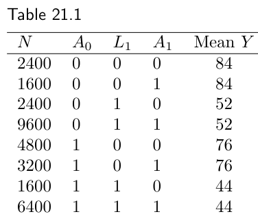
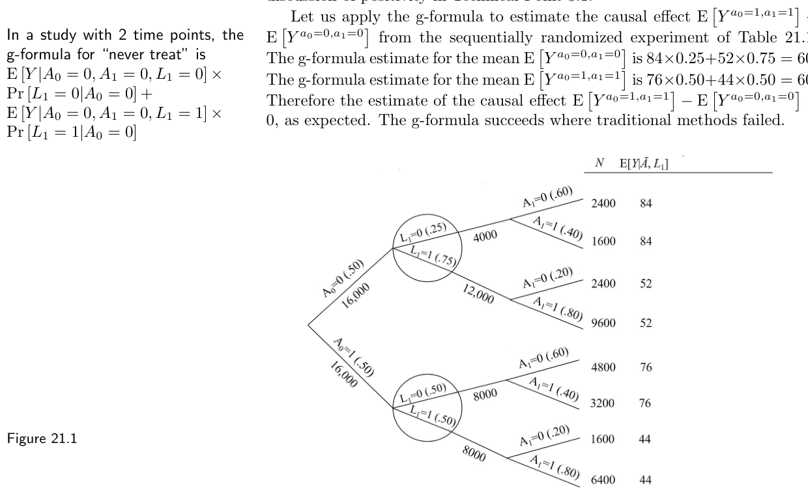
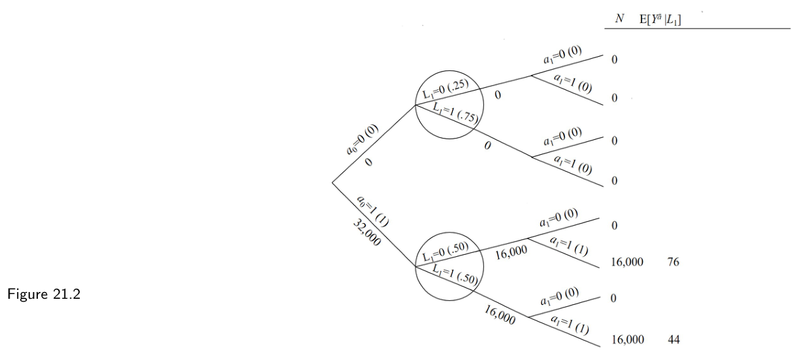

第三部分 · 时变处理的因果推断 · Part III — Causal inference for time-varying treatments
第 21 章 · 时变处理的 g 方法
Hernán MA, Robins JM（2020）. Causal Inference: What If. Chapter 21. 本页为中文全文翻译，附译注。
在上一章，我们描述了一个带有时变处理（time-varying treatment）与处理－混杂反馈（treatment-confounder feedback）的数据集。我们说明，当把传统混杂调整方法用到这份数据时，它们无法正确地调整混杂。尽管这个时变处理对结局的因果效应为零，传统调整方法却给出了偏离零的效应估计。本章给出传统方法在处理－混杂反馈下产生偏倚的解法：使用 g 方法——g 公式、逆概率加权（IP weighting），以及 g 估计，还有它们各自的双重稳健推广。沿用上一章同一份数据，我们在此展示三种 g 方法都能给出正确的（即为零的）效应估计。对于时点固定的处理，我们在第 13 章介绍了 g 公式，在第 12 章介绍了边际结构模型的逆概率加权，在第 15 章介绍了结构嵌套模型的 g 估计。这里我们在第 19 章所述的可识别性条件——序贯可交换性（sequential exchangeability）、可阳性性（positivity）与一致性（consistency）——之下，引入这三种 g 方法，用于比较静态处理策略。
21.1 时变处理的 g 公式
再来看第 20.1 节那个序贯随机化实验（sequentially randomized experiment）的数据，为方便起见，我们把它重列为表 21.1。假如我们只关心时点固定的处理 A1 的效应，也就是说，我们想比较反事实（counterfactual）结局均值 E[Ya1=1] 与 E[Ya1=0]。在第一、二部分我们已说明：在可识别性条件之下，每个均值 E[Ya1] 都是条件于（时点固定的）处理与混杂因素的结局条件均值 E[Y | A1=a1, L1=ℓ1] 的一个加权平均。具体地，E[Ya1] 等于加权平均
这是因为，如上一章所示，只需 L1 就足以让接受处理者（A1=1）与未接受处理者（A1=0）在条件意义下可交换。这个加权平均就是 E[Ya1] 的 g 公式：把均值结局标准化到研究人群中混杂因素（这里只有 L1）的分布上。
可是，在表 21.1 的序贯随机化实验里，处理 A=(A0, A1) 是时变的，而且如上一章所见，存在处理－混杂反馈。这意味着，传统调整方法不可靠，无法无偏地估计时变处理 A 的因果效应。例如，即便在一个序贯可交换性成立的序贯随机化实验中，传统方法也可能无法给出“始终处理”（E[Ya0=1,a1=1]）与“从不处理”（E[Ya0=0,a1=0]）这两种反事实下的均值结局的有效估计。相反，g 公式可以用来计算序贯随机化实验中反事实均值 E[Ya0,a1]。为此，需要把上面那个时点固定处理的 g 公式推广。

Mean Y 为该历史下随访结束时的平均结局。| N | A0 | L1 | A1 | Mean Y |
|---|---|---|---|---|
| 2400 | 0 | 0 | 0 | 84 |
| 1600 | 0 | 0 | 1 | 84 |
| 2400 | 0 | 1 | 0 | 52 |
| 9600 | 0 | 1 | 1 | 52 |
| 4800 | 1 | 0 | 0 | 76 |
| 3200 | 1 | 0 | 1 | 76 |
| 1600 | 1 | 1 | 0 | 44 |
| 6400 | 1 | 1 | 1 | 44 |
在（第 19 章描述的）可识别性条件之下，E[Ya0,a1] 的 g 公式仍然是一个加权平均，只不过现在它是对条件于时变处理以及为达到序贯可交换性所必需的混杂因素的结局均值 E[Y | A0=a0, A1=a1, L1=ℓ1] 取加权平均。权重是已知既往（即对应于所施加干预的既往处理取值）的混杂因素 L1 的分布。具体说，g 公式
等于在（静态）序贯可交换性对 Ya0,a1 成立时的 E[Ya0,a1]。也就是说，对于时变处理，可识别性条件下反事实均值结局的 g 公式估计量，就是把均值结局标准化到研究人群中混杂因素的分布上，表达式里的每一个因子都条件于既往的处理与协变量历史。这种对既往历史的 conditioning（条件化）在时点固定的情形下并不需要，因为那时处理与混杂因素都在单一时点被测量。
只有当对任意满足 f(ℓ1|a0) ≠ 0 的 ℓ1，人群中都存在个体满足 (A0=a0, A1=a1, L1=ℓ1) 时，g 公式才可计算（即定义良好）。这等价于技术要点 19.2 给出的可阳性性定义，也是技术要点 3.1 中关于可阳性性讨论向时变处理的推广。
我们用 g 公式来估计源自表 21.1 序贯随机化实验的因果效应 E[Ya0=1,a1=1] − E[Ya0=0,a1=0]。“从不处理”均值 E[Ya0=0,a1=0] 的 g 公式估计是 84×0.25 + 52×0.75 = 60。“始终处理”均值 E[Ya0=1,a1=1] 的 g 公式估计是 76×0.50 + 44×0.50 = 60。因此因果效应 E[Ya0=1,a1=1] − E[Ya0=0,a1=0] 的估计为 0，与预期一致。传统方法失败之处，g 公式成功了。

理解 g 公式的另一种方式是把它当作一次模拟。在 Y 与 L̄ 联合序贯可交换的条件下，g 公式模拟出：如果研究人群中每个人都遵循处理策略 ā，本应观察到的反事实结局 Yā 与协变量历史 L̄ā。换言之，g 公式模拟（识别）了策略 a 下反事实 Yā, L̄ā 的联合分布。要看到这一点，先看图 21.1 中带因果解释的结构化树图（structured tree graph），它是表 21.1 数据的另一种呈现。在上述可识别性条件之下，g 公式可以看作一个构建新树的步骤：让所有人都遵循策略 ā。例如，图 21.2 中带因果解释的结构化树图展示了“如果所有人遵循‘始终处理’策略（a0=1, a1=1）”本应观察到的反事实人群。

要模拟这个反事实人群，我们（i）给时点 k=0 与 k=1 分别赋以接受处理 a0=1 与 a1=1 的概率为 1；（ii）赋予与原始研究人群相同的 Pr[L1=ℓ1 | A0=a0] 与相同的 E[Y | A0=a0, A1=a1, L1=ℓ1]。有两点很重要。第一，g 公式的取值依赖于我们是否（以及在多大程度上）把 L 纳入。举个例子：假设我们没有收集 L1 的数据，因为我们错误地认为（如图 20.8 中去掉从 L1 指向 A1 的箭头后那样）我们的研究无需 L1。于是我们以为 L1 不是混杂因素，从而识别时不需要它。那么，在没有 L1 数据时，g 公式就退化为 E[Y | A0=a0, A1=a1]，因为没有需要调整的协变量历史。然而，由于我们的研究实际上是由图 20.8 所刻画（在该图下处理分配 A1 受 L1 影响），这个不含 L1 的 g 公式就不再具有因果解释了。
第二，即便 g 公式具有因果解释，它的各个组成部分也可能各自都没有因果解释。举例来说，考虑图 20.9 的因果图，在它之下只有静态序贯可交换性成立。包含 L1 的 g 公式正确地识别了 Ya 的均值。引人注目的是，无论我们是否加上从 A0、A1 指向 Y 的箭头，g 公式作为 E[Yā] 始终保有其因果解释，尽管它的两个组成部分——E[Y | A0=a0, A1=a1, L1=ℓ1] 与 Pr[L1=ℓ1 | A0=a0]——都完全没有任何因果解释。也就是说，Pr[L1=ℓ1 | A0=a0] ≠ Pr[L1a0=ℓ1]，且 E[Y | A0=a0, A1=a1, L1=ℓ1] ≠ E[Ya0,a1 | L1a0=ℓ1]。这两个不等号在图 20.1 与 20.2 所代表的序贯随机化试验中会变成等号。
现在把 g 公式推广到含多个时点 k 的高维情形。g 公式为
其中求和遍历所有可能的 l̄ 历史（l̄k−1 是截至时点 k−1 的历史）。这个对 l̄ 的求和也可以写成 ∑ℓK … ∑ℓ1 ∑ℓ0。在每个时点 k，给定 L̄k、Āk 对 Yā 的序贯可交换性成立时，这个表达式等于处理策略 ā 下的反事实均值 E[Yā]。精细辨析 21.1 给出了“历史”一词更细致的定义。
然而在实践里，如果数据是高维的（正如在带多个混杂因素或多个时点的观察性研究中预期的那样），g 公式的各个组成部分无法被直接计算。量 E[Y | Ā=ā, L̄=l̄] 与 f(ℓk | āk−1, l̄k−1) 需要被估计。例如，我们可以拟合一个线性回归模型来估计随访结束时结局变量的条件均值 E[Y | Ā=ā, L̄=l̄]，并拟合逻辑回归模型来估计每个时点 k≠0 处离散混杂因素 Lk 的分布（L0 的分布可以如第 13.3 节所述无需模型地估计）。这些模型的估计值 Ê[Y | Ā=ā, L̄=l̄] 与 f̂(ℓk | āk−1, l̄k−1) 随后会被代入 g 公式。自第 13 章起，我们把这个估计量称为插入式 g 公式（plug-in g-formula）；当插入式 g 公式里使用的估计值基于参数化模型时，我们称之为参数化 g 公式（parametric g-formula）。
为简洁起见，本章大体聚焦在确定性策略下的 g 公式。不过，在序贯可交换性之下，g 公式也能用来计算随机处理策略 fint 下的反事实结局均值。随机（静态）策略的一个例子是“在每个时点 k 独立地以概率 0.3 处理、以概率 0.7 不处理”，其中 fint(1 | āk−1, l̄k) = 0.3。也就是说，fint(ak | āk−1, l̄k) 是在处理策略下时点 k 给予处理 ak 的条件概率。
更一般地，对于随机处理策略（或干预）fint，g 公式的一般表达式为
注意，如果我们把 fint(ak | āk-1, l̄k) 替换为观测到的处理条件概率 f(ak | āk-1, l̄k)，这就是 Y 的观测均值的公式。这个 g 公式表达式足够一般，既能容纳确定性策略，也能容纳随机策略。在确定性处理策略下，fint(ak | āk-1, l̄k) 对策略规定的 ak 取值总是 1，对其他取值为 0。例如在“从不处理”策略 ā=(0,0,…0) 下，fint(0 | āk-1, l̄k)=1 对所有 k 成立。由于对规定的处理取值 fint 因子为 1、对其余取值为 0，上述公式中就无需包含 fint 因子以及对 ā 的求和。我们公开的软件实现了 g 公式的这个一般表达式，因而能容纳任意处理策略。